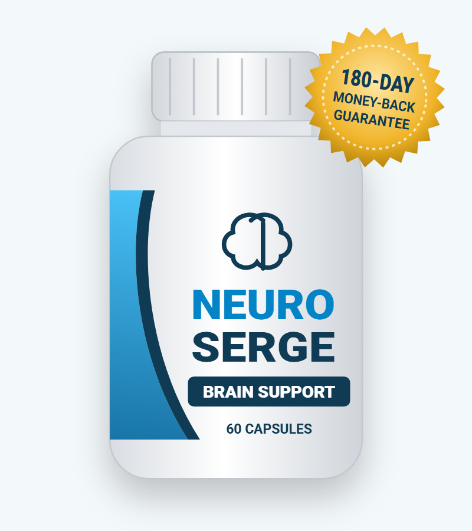
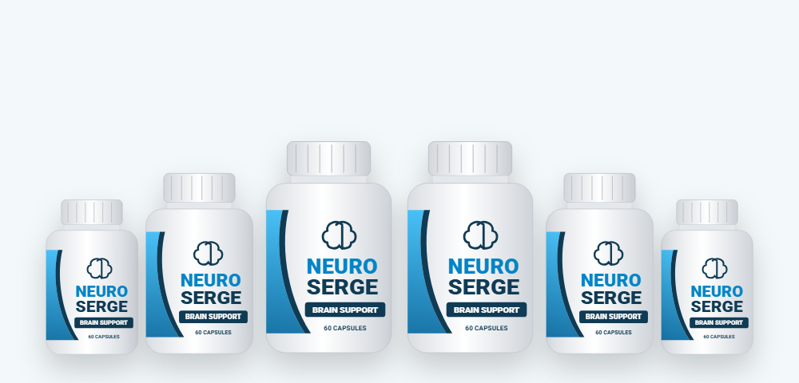
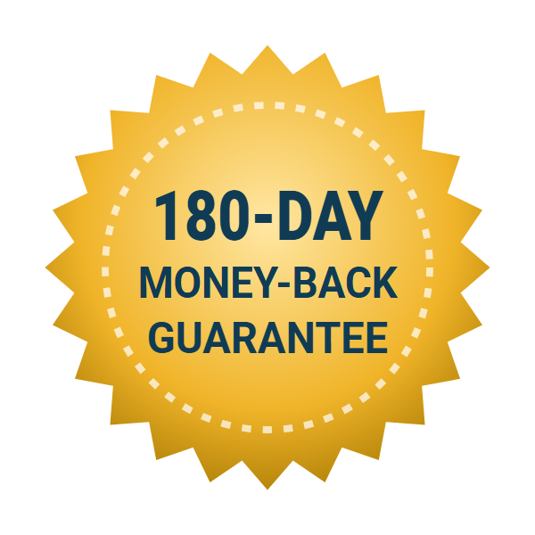

Antioxidant Protection
Grape seed, bilberry, green tea and olive leaf provide polyphenols that help counter oxidative stress, which rises with age.*
What we know about the Neuro Serge formula, why it's also searched as Neuro Surge, and how to buy Neuro Serge at the best price

Neuro Serge is a capsule supplement sold as a "brain health" formula for focus, memory and energy. Its order page promises "20+ ingredients and nutrients backed by clinical research," names six plant extracts, and offers a 180-day money-back guarantee — but it doesn't publish a supplement facts label.
In this Neuro Serge review we go through what's actually disclosed, explain the link with the popular search term Neuro Surge, look at the research on brain supplements, and lay out the current Neuro Serge price, sale packages and how to order safely.
The Neuro Serge supplement is a 60-capsule bottle labeled "Brain Support." It's sold online through a long-form sales page and checked out through ClickBank, the online retailer. The page says it's manufactured in the USA and describes the formula as natural, non-GMO, gluten-free, stimulant-free and non-habit-forming.
According to the page, each capsule contains "a unique proprietary blend of 20+ ingredients and nutrients" designed to support a healthy brain. Six are named: olive leaf, Cinnamomum cassia (cassia cinnamon), deglycyrrhizinated licorice (DGL), green tea extract, grape seed extract and bilberry extract.
What's missing is the label. We couldn't find a supplement facts panel on the official page, so the other 14-plus ingredients and all of the amounts are unknown. That's the biggest limitation of any Neuro Serge review — including this one.
Neuro Serge is a supplement, not a treatment for memory loss, dementia or any other condition.
If you've been looking for the Neuro Surge official website, you're not alone — "neuro surge" and "neurosurge" are searched about as often as "neuro serge." Here's what we found:
So for most people, Neuro Surge reviews and Neuro Serge reviews are talking about the same brain supplement under two spellings. Before you order, check that the bottle reads Neuro Serge — Brain Support — 60 Capsules and that you're on the official order page, which our buttons link to.
Tip: the spelling "Serge" is unusual, and look-alike sites use both versions. The safest route is the official order page with the 180-day guarantee.
Grape seed, bilberry, green tea and olive leaf provide polyphenols that help counter oxidative stress, which rises with age.*
The brain uses about 20% of the body's blood supply; grape seed and olive leaf are studied for circulation and blood pressure.*
Green tea offers a little caffeine and L-theanine for alertness; cinnamon is studied for blood sugar balance.*
These are reasonable ideas for a general wellness formula: what's good for blood vessels and blood sugar tends to be good for the brain over the long term. But the descriptions on the order page focus mostly on heart health, blood sugar, weight and digestion rather than memory or focus.
We also noticed the page appears to be adapted from a template: it mentions "No Toothpaste or Mouthwash Involved," and its free bonuses are blood sugar guides. That doesn't mean the product is bad, but it's a reason to rely on the guarantee rather than the marketing.
The six Neuro Serge ingredients named on the official order page. Amounts per capsule are not disclosed.
| Ingredient | What it is | What the seller says it does |
|---|---|---|
| Olive leaf extract | Source of oleuropein | Heart health, fiber, blood sugar |
| Cinnamomum cassia | Cassia cinnamon bark | Inflammatory response, heart health, insulin levels |
| Deglycyrrhizinated licorice (DGL) | Licorice with glycyrrhizin removed | Stress, inflammatory response, teeth and gums, respiratory health |
| Green tea extract | Catechins, L-theanine, some caffeine | Heart, brain, weight, liver function |
| Grape seed extract | Proanthocyanidins (OPCs) | Blood pressure, blood flow, kidney function |
| Bilberry extract | Anthocyanins | Vision, blood sugar, heart health |
The page says these are part of a "proprietary blend of 20+ plants and nutrients" and a second "blend of 4 plants and minerals." The remaining ingredients are not named.
Notably absent are the ingredients usually found in brain supplements — such as bacopa, citicoline, phosphatidylserine, lion's mane, ginkgo or omega-3s. The named Neuro Serge ingredients are antioxidants that are more commonly used in heart, blood sugar and eye formulas.
Our take: Neuro Serge is best thought of as a general antioxidant blend. Without a label you can't compare its doses with research or check for allergens.
| Ingredient | Typical studied dose | Evidence for memory or focus |
|---|---|---|
| Green tea (L-theanine + caffeine) | 100–200 mg theanine + 50–100 mg caffeine | Short-term attention improvements in small studies |
| Grape seed extract | 150–400 mg | Small studies on blood pressure; limited cognition data |
| Bilberry / blueberry anthocyanins | Freeze-dried fruit or 100–500 mg extract | Some small trials of blueberry show memory benefits in older adults |
| Olive leaf (oleuropein) | 250–500 mg | Blood pressure studies; brain data mostly in animals |
| Cassia cinnamon | 1–6 g | Blood sugar studies; no good cognition trials |
| DGL licorice | 380–760 mg | Used for heartburn; no brain evidence |
The best-supported ingredients for brain function in this list are green tea's natural caffeine–theanine combination (for short-term alertness) and berry anthocyanins (for modest memory support in older adults). The rest have little or no direct cognitive evidence.
Large trials of brain supplements in general have been disappointing: ginkgo didn't prevent dementia in a 3,000-person study, and most multi-ingredient "nootropic" products have never been tested. The lifestyle factors below have far stronger evidence.
The order page claims "127,000 reviews," and its testimonials can't be verified.
Whether or not you take a supplement, these habits have the strongest evidence for keeping your brain sharp:
Aerobic exercise increases blood flow to the brain and is linked to a larger hippocampus, the memory center. Aim for 150 minutes a week.
Deep sleep is when the brain consolidates memories and clears waste products. Seven to nine hours is the target for adults.
High blood pressure and diabetes are two of the biggest modifiable risk factors for cognitive decline.
Plenty of vegetables, berries, beans, olive oil, fish and nuts — the MIND diet pattern is linked to slower cognitive aging.
Untreated hearing loss is a major risk factor for dementia; hearing aids may reduce that risk.
New skills, conversation and challenging activities build cognitive reserve.
Low vitamin B12, vitamin D or thyroid hormone can cause brain fog — a simple blood test can rule them out.
Possible benefits based on the named ingredients.*
Grape seed, bilberry, olive leaf and green tea supply polyphenols.*
Green tea's caffeine and L-theanine can help short-term focus.*
Olive leaf and grape seed are studied for healthy blood pressure.*
Cinnamon and bilberry may help steady blood sugar, which supports energy.*
The six named ingredients are common in supplements and generally well tolerated in normal amounts.
Neuro Serge is a general antioxidant blend sold as a brain supplement. The named ingredients are safe and familiar, but they're better known for heart and blood sugar support than for memory, and the missing label makes it impossible to judge the doses.
The 180-day money-back guarantee is the strongest part of the offer. If you want to try Neuro Serge, order from the official website, give it a few months alongside the proven habits above, and request a refund if you don't notice a difference.
Visit the Neuro Serge Official Website| Option | What it offers | Typical cost | Evidence |
|---|---|---|---|
| Neuro Serge | Undisclosed antioxidant blend | $49–$79 a month | None on the product |
| Green tea (2–3 cups a day) | Caffeine + L-theanine | A few dollars a month | Short-term attention benefits |
| Blueberries / berries daily | Anthocyanins | Grocery cost | Modest memory benefits in older adults |
| Regular aerobic exercise | Blood flow, brain volume | Free | Strong |
| Doctor check-up and blood tests | Rules out B12, thyroid, sleep apnea | Often covered | Essential for real memory problems |
Early assessment matters: many causes of memory and focus problems are reversible, and treatments for early Alzheimer's work best when started early.
Search results for Neuro Serge include the official page, many look-alike "official website" sites under both the Neuro Serge and Neuro Surge spellings, and marketplace listings. To buy the genuine Neuro Serge supplement:
Each Neuro Serge bottle is a 30-day supply, covered by the 180-day money-back guarantee.
60-Day Supply · Starter
$79/bottle
No bonuses
180-Day Supply
$49/bottle
+ 2 free bonus guides
90-Day Supply · Most Popular
$69/bottle
+ 2 free bonus guides
Prices checked on the official order page on October 18, 2026 and may change. The page lists the 2-bottle starter as both "+ shipping" and "free shipping" — confirm at checkout. Bonuses: "Balance Your Blood Sugar Blueprint" and "The Blood Sugar Solution" guides. One-time payment.
The Neuro Serge sale price works through bundles rather than coupons:
The order page's "regular price" figures ($790 for two bottles, for example) are inflated comparisons rather than prices anyone pays, so focus on the per-bottle cost.
Because of the 180-day guarantee, the 6-bottle package is less risky than it looks: you have six months to decide. Just be sure to keep your receipt, and be cautious of other sites offering bigger Neuro Serge discounts without the guarantee.


Every Neuro Serge order from the official website comes with a 180-day money-back guarantee. The page says that if you're not impressed with the results, you can write to the seller at any time within 180 days and return what you haven't used for a full refund.
For order or refund help, ClickBank's customer support handles payments, while the vendor handles product questions.
Try Neuro Serge Risk-FreeNeuro Serge is a dietary supplement sold for brain health, focus, memory and energy. It comes as 60 capsules per bottle. The seller says it contains a proprietary blend of more than 20 plants and nutrients and names olive leaf, Cinnamomum cassia, deglycyrrhizinated licorice (DGL), green tea extract, grape seed extract and bilberry extract.
Many people search for Neuro Serge as Neuro Surge, and the Neuro Serge order page itself stores its product images in a folder named "getneurosurge," which suggests the product was sold under that name before. Other, unrelated products also use the Neuro Surge name, so check that the bottle and order page match before you buy.
There are no published studies on Neuro Serge, and the full label with ingredient amounts isn't available. The named ingredients are mainly antioxidants with small or early research for brain health, so any effect is uncertain. Use the 180-day guarantee if you notice no difference.
On the official order page Neuro Serge costs $158 for 2 bottles ($79 each), $207 for 3 bottles ($69 each) and $294 for 6 bottles ($49 each). The 3- and 6-bottle packages include two free bonus guides, and the page advertises free shipping.
The sale price is built into the bundles: the per-bottle price drops from $79 to $69 for 3 bottles and $49 for 6 bottles. We haven't seen separate coupon codes on the official page.
The seller says to take Neuro Serge with water. Follow the serving size printed on your bottle, since the full directions aren't on the sales page.
The named ingredients are usually well tolerated, but cassia cinnamon contains coumarin, which can affect the liver in large amounts; green tea adds some caffeine; and olive leaf and cinnamon may lower blood pressure or blood sugar slightly. Ask your doctor first if you take blood thinners, diabetes or blood pressure medicine.
Buy Neuro Serge through the official order page, where checkout is handled by ClickBank and the 180-day guarantee applies. Look-alike sites and marketplace listings may sell other products or skip the guarantee.
The seller describes Neuro Serge as stimulant-free and non-habit-forming. Green tea extract does contain a small amount of caffeine.
No. The order page says your order is a one-time payment with no auto-ship or hidden charges.
Neuro Serge comes with a 180-day money-back guarantee. You can return what you haven't used within 180 days of purchase for a refund.
The seller says orders ship the same day they are received and arrive in 7 to 10 business days in the US. International orders take longer and shipping fees apply.
Get Neuro Serge for as little as $49 per bottle on the 6-bottle package with free shipping and two free bonus guides (also included with 3 bottles) — backed by a 180-day money-back guarantee.
Order Neuro Serge Now